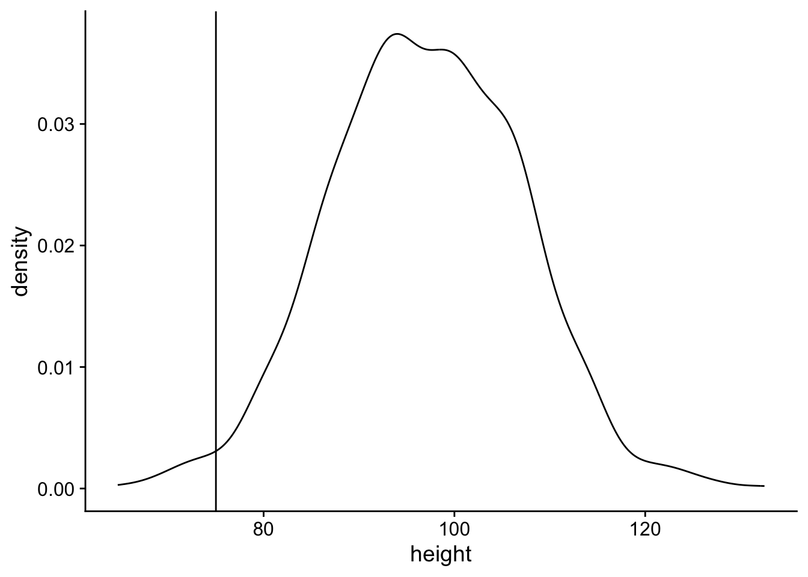
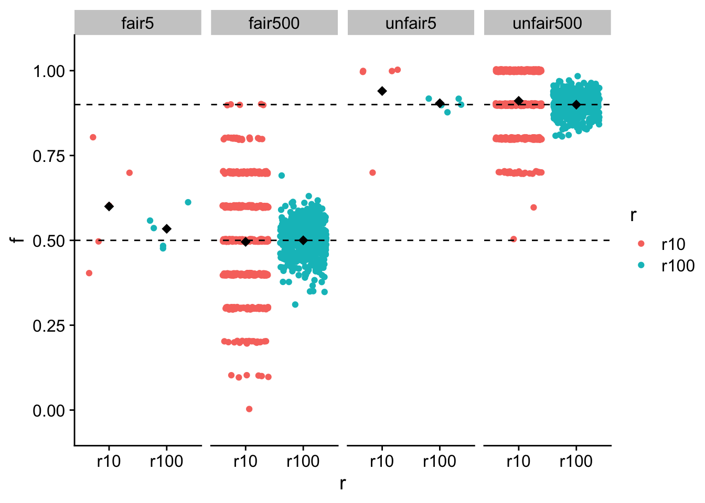

-- Attaching core tidyverse packages ------------------------ tidyverse 2.0.0 --
v dplyr 1.1.3 v readr 2.1.4
v forcats 1.0.0 v stringr 1.5.0
v ggplot2 3.4.3 v tibble 3.2.1
v lubridate 1.9.2 v tidyr 1.3.0
v purrr 1.0.2
-- Conflicts ------------------------------------------ tidyverse_conflicts() --
x dplyr::filter() masks stats::filter()
x dplyr::lag() masks stats::lag()
i Use the conflicted package (<http://conflicted.r-lib.org/>) to force all conflicts to become errors
Attaching package: 'rstatix'
The following object is masked from 'package:stats':
filter
Attaching package: 'cowplot'
The following object is masked from 'package:lubridate':
stampProblem Set Stats Bootcamp - class 11
Distributions and probabilites
Problem # 1
Assume that the height jackalopes fit a normal distribution. Through careful field research measuring 1000 wild jackalopes, we have determined the mean height is 97 cm and the standard deviation is 10 cm. Your was camping and found a jackalope. Being a great friend and knowing your interest in jackalopes, they (harmlessly) subdued and measured the wild jackalope and found that it was 75 cm.
- Simulate a normal distribution of
1000jackalope heights using themeanandsdyou painstakingly measured.
j <- tibble(height = rnorm(n = 1000, mean = 97, sd = 10))- Plot the density of the jackalope height distribution. Indicate with a vertical line the height of the jackalope your friend measured.
ggplot(
data = j,
aes(x = height)
) +
geom_density() +
geom_vline(xintercept = 75) +
theme_cowplot()
- Calculate the probability of a jackalope being 75 cm or shorter.
pnorm(75, mean = 97, sd = 10, lower.tail = T)[1] 0.01390345- Are jackalope heights normally distributed?
j |>
shapiro_test(height)# A tibble: 1 x 3
variable statistic p
<chr> <dbl> <dbl>
1 height 0.999 0.855Explore coin flip distribution characteristics
When we flip a fair coin multiple times (numFlips) in a row, we expect to get heads (or tails) 50% of the time on average. This is not always the case for a single round of flipping, but if we do multiple rounds with (numRounds) that average should be 50%.
Problem # 2
In class, we simulated coin flip experiments using two different coins that were either fair (0.5 prob of head) or unfair (0.9 prob of head). We varied the number of flips in a single round (numFlips) and the number of rounds of flipping (numRounds). For this assignment, use the same to coins and use all possible combinations of numFlips and numRounds from the table below.
numFlips |
numRounds |
|---|---|
| 5 | 10 |
| 500 | 100 |
- Create a tibble has all the combinations of
numFlips,numRounds, andprobof getting heads.
# hint for 8 flips and 12 rounds of a fair coin you could do
# rbinom(n = 8, size = 12, prob = .5)/12
fair5 <- tibble(
r10 = rbinom(n = 5, size = 10, prob = .5) / 10,
r100 = rbinom(n = 5, size = 100, prob = .5) / 100,
type = rep("fair5")
)
fair500 <- tibble(
r10 = rbinom(n = 500, size = 10, prob = .5) / 10,
r100 = rbinom(n = 500, size = 100, prob = .5) / 100,
type = rep("fair500")
)
unfair5 <- tibble(
r10 = rbinom(n = 5, size = 10, prob = .9) / 10,
r100 = rbinom(n = 5, size = 100, prob = .9) / 100,
type = rep("unfair5")
)
unfair500 <- tibble(
r10 = rbinom(n = 500, size = 10, prob = .9) / 10,
r100 = rbinom(n = 500, size = 100, prob = .9) / 100,
type = rep("unfair500")
)
all <- bind_rows(fair5, fair500, unfair5, unfair500) |>
pivot_longer(
cols = c("r10", "r100"),
names_to = "r",
values_to = "f"
)- Plot your result using
faceting. I recommendfacetingbynumFlips(like in class describing both the number and fair v unfair) . Include the observed mean as a black diamond and the true mean as a dashed line.
ggplot(all, aes(x = r, y = f, color = r)) +
geom_jitter() +
stat_summary(
fun.y = mean, geom = "point",
shape = 18,
size = 3, color = "black"
) +
ylim(-0.05, 1.05) +
facet_grid(~type) +
geom_hline(yintercept = .5, linetype = "dashed") +
geom_hline(yintercept = .9, linetype = "dashed") +
theme_cowplot()Warning: The `fun.y` argument of `stat_summary()` is deprecated as of ggplot2 3.3.0.
i Please use the `fun` argument instead.
3. Report the means and sd of each pair of numFlips and numRounds
all |>
group_by(type, r) |>
get_summary_stats(show = c("mean", "sd"))# A tibble: 8 x 6
type r variable n mean sd
<chr> <chr> <fct> <dbl> <dbl> <dbl>
1 fair5 r10 f 5 0.52 0.13
2 fair5 r100 f 5 0.512 0.029
3 fair500 r10 f 500 0.5 0.158
4 fair500 r100 f 500 0.497 0.053
5 unfair5 r10 f 5 0.92 0.13
6 unfair5 r100 f 5 0.906 0.036
7 unfair500 r10 f 500 0.899 0.093
8 unfair500 r100 f 500 0.9 0.0294. Describe in a few sentences how increasing numFlips and numRounds alters:The estimation of and spread around the true mean.
Increasing numRounds leads to a closer approximation of the true mean.
Increasing numRounds leads to a decrease in the sd.
Increasing numFlips increases the sd.